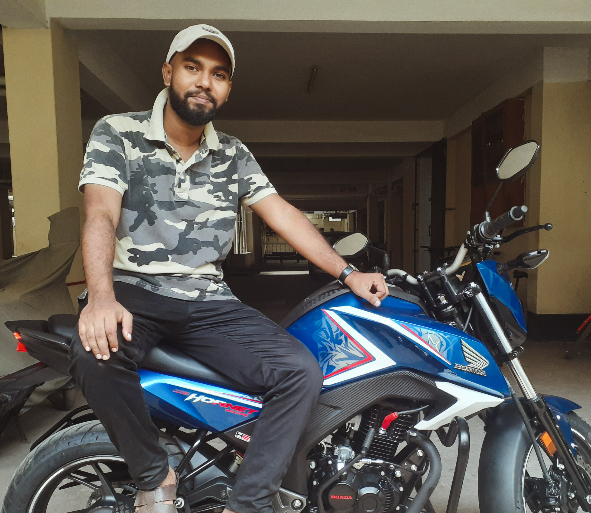

tai naki ?
ei bar valo koira shikhte hobe.
felling excited !felling excited !felling excited !felling excited !felling excited !felling excited !
tai naki vaiya ?
yay i learned git hub !
Poverty is widespread, but Bangladesh has in recent years reduced population growth and improved health and education.Formerly East Pakistan, Bangladesh came into being only in 1971, when the two parts of Pakistan split after a bitter war which drew in neighbouring India.Bangladesh spent 15 years under military rule and, although democracy was restored in 1990, the political scene remains volatile. Islamist extremism has also been rising in the traditionally tolerant country.Bangladesh is low-lying and vulnerable to flooding and cyclones. It stands to be badly affected by any rise in sea levels.
